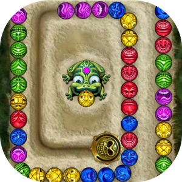

 Trong trò chơi Zuma, có một dãy các viên bi gồm bốn màu xanh, đỏ, tím, vàng liên tiếp nhau (xem hình bên). Chú ếch Zuma sẽ bắn 1 viên bi (cũng có màu là một trong bốn màu trên) chèn vào dãy. Nếu viên bi mới tạo ra một dãy có từ 3 viên bi cùng màu trở lên thì chú ếch sẽ ăn được các viên bi cùng màu đó. Các viên bi còn lại sẽ sáp nhập lại, và nếu lại tạo ra dãy có từ 3 viên bi cùng màu trở lên thì chú lại tiếp tục được ăn. Cứ tương tự như vậy cho đến khi không còn dãy 3 bi mới. Xét ví dụ là dãy 11 viên bi như sau (X: xanh, D: đỏ, T: tím, V: vàng):
T T X D D X X X V V V
Nếu Zuma bắn 1 viên bi đỏ vào vị trí 4 thì sẽ tạo ra dãy bi sau (bi đỏ được chèn vào vị trí 4):
T T X D D D X X X V V V
Bi bắn vào tạo ra dãy 3 bi đỏ, như vậy chú sẽ ăn được 3 bi đỏ và dãy còn lại là: T T X X X X V V V
1 bi xanh sáp nhập với 3 bi xanh tạo thành dãy 4 bi nên Zuma ăn tiếp 4 bi này, dãy còn lại là: T T V V V
Dù dãy này có 3 bi vàng nhưng không được ăn vì 3 bi này không phải là do sáp nhập từ 2 phía. Vậy Zuma ăn được tổng cộng 7 bi (3 đỏ, 4 xanh).
Cho một dãy bi bất kỳ và viên bi được bắn ra, bạn hãy giúp Zuma tính xem ăn được bao nhiêu viên bi nhé.
Dữ liệu nhập: gồm 3 dòng
- Dòng thứ nhất là số nguyên n, chiều dài của dãy bi ban đầu (1 ≤ n ≤ 100)
- Dòng thứ hai gồm n ký tự X, D, T, V biểu thị màu sắc các viên bi. Các ký tự được viết sát nhau
- Dòng thứ ba là một số nguyên k và một ký tự b (1 ≤ k ≤ n+1, b là một trong 4 ký tự X, D, T, V). k là vị trí và b là màu sắc của viên bi được bắn. Chú ý nếu k = n+1 nghĩa là bi được nối vào cuối chuỗi.
Dữ liệu xuất:
- Là một số nguyên xác định tổng số viên bi mà Zuma ăn được
Test 2 sau khi bắn bi tạo ra dãy XDTTV, chưa đủ 3 bi tím nên không ăn được